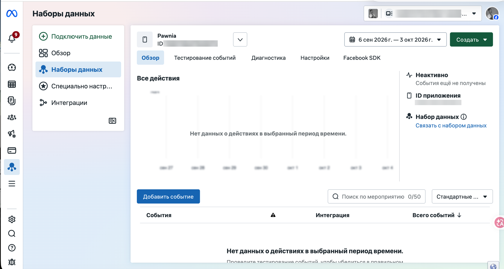

3.4 Events Manager — проверка событий
Все предыдущие шаги — это настройка. Этот экран — единственный способ узнать, доходят ли события от SDK до Meta на самом деле. Именно здесь был пойман реальный баг Pawnia: SDK был настроен правильно по всем чек-листам, но события не приходили.
Наборы данных → Обзор
business.facebook.com/events_manager → «Наборы данных» → выбери приложение. Статус в правом верхнем углу — это первое, на что смотреть, раньше, чем в таблицу событий ниже.

Тестирование событий / Диагностика
«Тестирование событий» — для живой проверки одного события в реальном времени (установи приложение, дай согласие, событие должно появиться тут за секунды). «Диагностика» — список уже обнаруженных проблем за последние 24 часа.
About Diagnostics →«Неактивно»
Именно этот статус у Pawnia на момент разбора — события от SDK ещё не получены вообще, несмотря на то, что по коду и настройкам всё выглядело правильно. Статус «Неактивно» значит буквально «ни одного события не пришло», а не «есть проблема с конкретным событием».
ID приложения
Сверь с тем же ID в Meta for Developers (3.2) — на этом экране легко по ошибке смотреть набор данных не того приложения.
Скрыт: ID рекламного аккаунта
Переключатель аккаунта в правом верхнем углу — у себя там будет твой собственный ID.